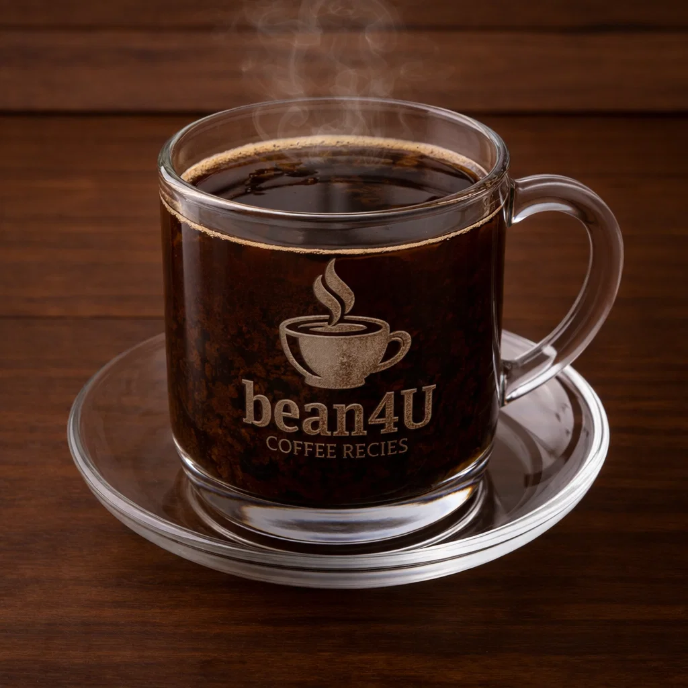

Kopi Luwak

Ingredients
- High-quality kopi luwak beans (ethical & certified recommended)
- Filtered water
Preparation
- Grind kopi luwak beans to espresso or filter grind depending on brew method.
- Brew as espresso or pour-over, enjoy small amounts to appreciate the flavor.
- Note: buy ethically sourced beans; avoid products linked to animal cruelty.
- youtube short quickly explaining it:
- short Explanation
Video from @specialtycoffee
Channel